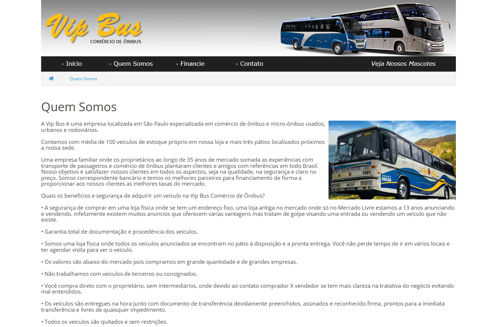
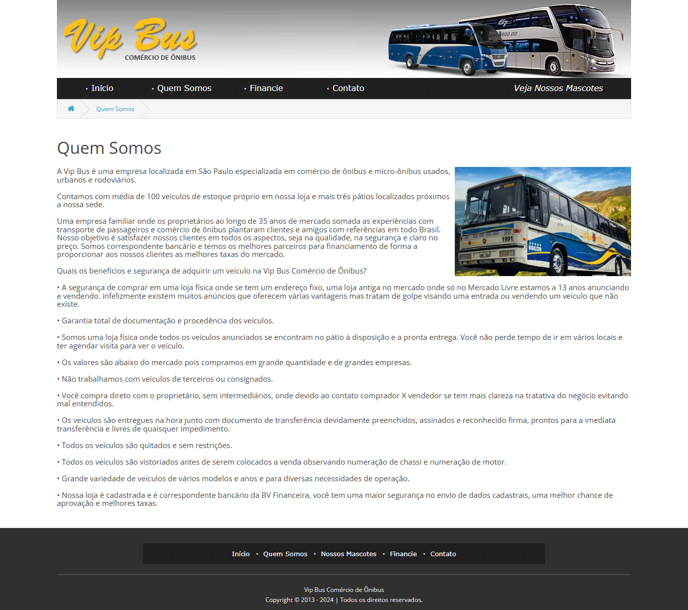

Sistema de Investigação de Marca e Identidade Online
https://vipbus.com.br/index.php?route=information/information&information_id=4
Prioridade: MEDIUM · Cenário: B_AMBIGUOUS_COMMUNICATION · Revisão humana: PENDING
Trata-se de loja revendedora de veículos pesados (Vip Bus Comércio de Ônibus) dentro do escopo de investigação de COBANs. Embora não utilize logotipos do Banco BV nem tente se passar por canal oficial da instituição, a loja afirma expressamente ser 'cadastrada e correspondente bancário da BV Financeira' para captação de dados cadastrais e financiamento (E-TXT-003), sem informar em nenhuma parte da página ou do rodapé sua razão social e CNPJ, tampouco os dados de Ouvidoria do banco contratante. Assim, enquadra-se em B_AMBIGUOUS_COMMUNICATION (REVIEW_REQUIRED / MEDIUM) para verificação cadastral do correspondente e adequação de transparência conforme a Resolução CMN nº 4.935/2021. [Revisor: CONFIRM] A evidência confirma tratar-se de revenda de veículos pesados (Vip Bus Comércio de Ônibus) que declara expressamente atuar como correspondente bancário da BV Financeira para recepção de dados cadastrais e financiamento (E-TXT-003, E-SHOT-FULL), mas omite no site e no rodapé sua razão social, CNPJ e os telefones da Ouvidoria do banco contratante (E-FTR), descumprindo os deveres de transparência da Resolução CMN nº 4.935/2021. Classificação REVIEW_REQUIRED e prioridade MEDIUM mantidas.


| Ref | Tipo | Local | Conteúdo |
|---|---|---|---|
| E-URL | domain | url | URL final: https://vipbus.com.br/index.php?route=information/information&information_id=4 (domínio: vipbus.com.br) |
| E-DISC-001 | text | search_index | Índice de busca (grounding): vipbus.com.br — **URL:** `https://vipbus.com.br` | **Localização:** São Paulo/SP | **Uso da Marca:** Utiliza o nome **"BV Financeira"** no texto institucional para gerar autoridade, afirmando expressamente: *"Nossa loja é cadastrada e é correspondente bancário da BV Financeira, você tem uma maior segurança no envio de dados cadastrais, uma melhor chance de aprovação e melhores taxas"* | Embora declare textualmente ser correspondente bancário da BV Financeira, não apresenta na mesma seção a razão social completa, o CNPJ e as informações exigidas pela Resolução CMN nº 4.935/2021 |
| E-SHOT-VIEWPORT | screenshot | viewport | evidence\Ce5bf18fc30\attempt-1\viewport.png (sha256 1443ad4a2b882bd2…) |
| E-SHOT-FULL | screenshot | page | evidence\Ce5bf18fc30\attempt-1\fullpage.png (sha256 9a6d9b0308cf8271…) |
| E-TITLE | title | head | Quem Somos |
| E-HEAD-1 | heading | page | Quem Somos |
| E-FOLD | text | viewport (acima da dobra) | ⋅ Início ⋅ Quem Somos ⋅ Financie ⋅ Contato Veja Nossos Mascotes Quem Somos Quem Somos A Vip Bus é uma empresa localizada em São Paulo especializada em comércio de ônibus e micro-ônibus usados, urbanos e rodoviários. Contamos com média de 100 veículos de estoque próprio em nossa loja e mais três pátios localizados próximos a nossa sede. Uma empresa familiar onde os proprietários ao longo de 35 anos de mercado somada as experiências com transporte de passageiros e comércio de ônibus plantaram clientes e amigos com referências em todo Brasil. Nosso objetivo é satisfazer nossos clientes em todos os aspectos, seja na qualidade, na segurança e claro no preço. Somos correspondente bancário e temos os melhores parceiros para financiamento de forma a proporcionar aos nossos clientes as melhores taxas do mercado. Quais os benefícios e segurança de adquirir um veículo na Vip Bus Comércio de Ônibus? • A segurança de comprar em uma loja física onde se tem um endereço fixo, uma loja antiga no mercado onde só no Mercado Livre estamos a 13 anos anunciando e vendendo. infelizmente existem muitos anúncios que oferecem várias vantagens mas tratam de golpe visando uma entrada ou vendendo um veículo que não existe. • Garantia total de documentação e procedência dos veículos. • Somos uma loja física onde todos os veículos anunciados se encontram no pátio à disposição e a pronta entrega. Você não perde tempo de ir em vários locais e ter agendar visita para ver o veículo. • Os valores são abaixo do mercado pois compramos em grande quantidade e de grandes empresas. • Não trabalhamos com veículos de terceiros ou consignados. • Você compra direto com o proprietário, sem intermediários, onde devido ao contato comprador X vendedor se tem mais clareza na tratativa do negócio evitando mal entendidos. • Os veículos são entregues na hora junto com documento de transferência devidamente preenchidos, assinados e reconhecido firma, prontos para a imediata transferência e livres de quaisquer impediment |
| E-FTR | text | footer | Início ⋅ Quem Somos ⋅ Nossos Mascotes ⋅ Financie ⋅ Contato Vip Bus Comércio de Ônibus Copyright © 2013 - 2024 | Todos os direitos reservados. |
| E-TXT-001 | text | page | Nosso objetivo é satisfazer nossos clientes em todos os aspectos, seja na qualidade, na segurança e claro no preço. Somos correspondente bancário e temos os melhores parceiros para financiamento de forma a proporcionar aos nossos clientes as melhores taxas do mercado. |
| E-TXT-002 | text | page | • A segurança de comprar em uma loja física onde se tem um endereço fixo, uma loja antiga no mercado onde só no Mercado Livre estamos a 13 anos anunciando e vendendo. infelizmente existem muitos anúncios que oferecem várias vantagens mas tratam de golpe visando uma entrada ou vendendo um veículo que não existe. |
| E-TXT-003 | text | page | • Nossa loja é cadastrada e é correspondente bancário da BV Financeira, você tem uma maior segurança no envio de dados cadastrais, uma melhor chance de aprovação e melhores taxas. |
| Dimensão | Sinal | Achado | Refs |
|---|---|---|---|
| VISUAL_IDENTITY | LEGITIMATE | A página apresenta identidade visual própria da loja 'Vip Bus Comércio de Ônibus', sem imitação de layout ou cores institucionais do Banco BV. | E-SHOT-VIEWPORT E-SHOT-FULL |
| DECLARED_COMMERCIAL_IDENTITY | CONFUSION | Apresenta-se pelo nome fantasia 'Vip Bus Comércio de Ônibus', mas omite a razão social e o CNPJ em toda a página institucional 'Quem Somos' e no rodapé. | E-FOLD E-FTR E-SHOT-FULL |
| CORRESPONDENT_TRANSPARENCY | CONFUSION | Declara expressamente ser correspondente bancário cadastrado da BV Financeira para captação de dados cadastrais e financiamento, porém sem exibir o CNPJ do correspondente e os telefones da Ouvidoria do banco contratante. | E-TXT-001 E-TXT-003 E-DISC-001 |
| INSTITUTIONAL_LANGUAGE | LEGITIMATE | A linguagem é de terceiro comercial (revenda de ônibus e micro-ônibus usados) destacando sua condição de loja física e correspondente bancário, sem se passar pelo próprio banco. | E-FOLD E-TXT-003 |
| LOGO_USAGE | LEGITIMATE | Não há uso do logotipo do Banco BV ou da BV Financeira na página inspecionada, apenas menção textual no corpo do texto. | E-SHOT-FULL E-TXT-003 |
| SERVICE_JOURNEY | NEUTRAL | A página 'Quem Somos' menciona envio de dados cadastrais e possui link no menu para a seção 'Financie', cujo formulário não foi inspecionado nesta coleta. | E-FOLD E-TXT-003 |
| CONTACT_CHANNELS | NEUTRAL | Não foram exibidos telefones, endereço completo ou canais de ouvidoria na página 'Quem Somos' ou no rodapé. | E-FOLD E-FTR |
| CONSUMER_CONFUSION | LEGITIMATE | O consumidor identifica claramente que se trata de uma loja de comércio de ônibus usados, mas não dispõe dos dados cadastrais (CNPJ) para verificar a regularidade do correspondente bancário. | E-FOLD E-TXT-003 E-SHOT-FULL |
Trata-se de loja revendedora de veículos pesados (Vip Bus Comércio de Ônibus) dentro do escopo de investigação de COBANs. Embora não utilize logotipos do Banco BV nem tente se passar por canal oficial da instituição, a loja afirma expressamente ser 'cadastrada e correspondente bancário da BV Financeira' para captação de dados cadastrais e financiamento (E-TXT-003), sem informar em nenhuma parte da página ou do rodapé sua razão social e CNPJ, tampouco os dados de Ouvidoria do banco contratante. Assim, enquadra-se em B_AMBIGUOUS_COMMUNICATION (REVIEW_REQUIRED / MEDIUM) para verificação cadastral do correspondente e adequação de transparência conforme a Resolução CMN nº 4.935/2021.
Há declaração de correspondente ou de parceria, sem identificação suficiente ou sem confirmação cadastral.
| Tipo | Valor | Ref | Contexto |
|---|---|---|---|
| domain | vipbus.com.br | E-URL | |
| correspondent_declaration | Somos correspondente | E-FOLD | ⋅ Início ⋅ Quem Somos ⋅ Financie ⋅ Contato Veja Nossos Mascotes Quem Somos Quem Somos A Vip Bus é uma empresa localizada em São Paulo especializada em comércio de ônibus e micro-ônibus usados, urbanos |
| correspondent_declaration | correspondente bancário | E-TXT-003 | • Nossa loja é cadastrada e é correspondente bancário da BV Financeira, você tem uma maior segurança no envio de dados cadastrais, uma melhor chance de aprovação e melhores taxas. |
Mapeamento indicativo para apoio à auditoria. Não constitui conclusão regulatória; a decisão definitiva pertence à auditoria.
Fonte: NORMATIVE
Art. 14. O contrato de correspondente deve estabelecer: [...] II - vedação à utilização, pelo contratado, de logomarca ou de outros atributos que sejam similares aos adotados pela instituição contratante em suas agências, postos de atendimento, sítio eletrônico na internet, aplicativo ou outras plataformas de comunicação em rede;
Evidência observada: E-SHOT-FULL E-SHOT-VIEWPORT E-TXT-003
Fonte: NORMATIVE
Art. 14. O contrato de correspondente deve estabelecer: [...] III - divulgação ao público, pelo contratado, de sua condição de prestador de serviços à instituição contratante, identificada pelo nome com que é conhecida no mercado, com descrição dos produtos e serviços oferecidos e canais de contato da instituição contratante, inclusive de sua ouvidoria, em local visível, em destaque e em formato legível, por meio de: a) sítio eletrônico do correspondente na internet, acessível na página inicial; b) aplicativo e outras plataformas de comunicação em rede do correspondente; [...]
Hipótese: Há declaração da condição de correspondente/prestador, mas outros elementos da página (DECLARED_COMMERCIAL_IDENTITY) podem contradizê-la ou reduzir seu efeito (destaque, legibilidade e identificação da contratante a verificar). Aplicável somente se confirmado o vínculo de correspondente.
Evidência observada: E-DISC-001 E-FOLD E-FTR E-SHOT-FULL E-TXT-001 E-TXT-003
Informação faltante:
Fonte: NORMATIVE
Art. 3º O correspondente atua por conta e sob as diretrizes da instituição contratante, que assume inteira responsabilidade pelo atendimento prestado aos clientes e usuários por meio do contratado.
Evidência observada: —
Limitações: requisitos contratuais/internos não fornecidos: mapeamento limitado ao texto normativo
Decisão: CONFIRM → REVIEW_REQUIRED / MEDIUM
A evidência confirma tratar-se de revenda de veículos pesados (Vip Bus Comércio de Ônibus) que declara expressamente atuar como correspondente bancário da BV Financeira para recepção de dados cadastrais e financiamento (E-TXT-003, E-SHOT-FULL), mas omite no site e no rodapé sua razão social, CNPJ e os telefones da Ouvidoria do banco contratante (E-FTR), descumprindo os deveres de transparência da Resolução CMN nº 4.935/2021. Classificação REVIEW_REQUIRED e prioridade MEDIUM mantidas.
| Tema | Severidade | Questionamento | Refs |
|---|---|---|---|
| contradictory_evidence | LOW | Coexistem declaração de correspondente e indícios de confusão. | E-FOLD E-TXT-001 E-TXT-003 |
| Fonte | Consulta / hipótese | URL original | Título / trecho |
|---|---|---|---|
| grounding | Objetivo: Estabelecimentos (loja de veículos em São Paulo) que divulgam financiamento da marca.
Execute no Google Search as seguintes consultas (dorks):
- loja de veículos "São Paulo" ("Banco BV" OR "bv financeira") (financiamento OR correspondente) -site:bv.com.br -site:bancobv.com.br -site:bvfinanceira.com.br -site:bvinvestimentos.com.br -site:napista.com.br -site:bvopen.com.br -site:meufinanciamentosolar.com.br -site:votorantim.com.br -site:vam.com.br -site:reclameaqui.com.br -site:jusbrasil.com.br -site:jus.br -site:weebly.com -site:site123.me
Liste de forma abrangente as páginas públicas encontradas (até 12 resultados distintos), informando para cada uma o nome do estabelecimento/perfil, a URL e como a marca é utilizada (destaque visual, título, feirão, simulador, redes sociais e se há ou não identificação clara de CNPJ e condição de correspondente bancário). H5-establishment:loja de veículos:São Paulo | https://vipbus.com.br/index.php?route=information/information&information_id=4 | vipbus.com.br **URL:** `https://vipbus.com.br` | **Localização:** São Paulo/SP | **Uso da Marca:** Utiliza o nome **"BV Financeira"** no texto institucional para gerar autoridade, afirmando expressamente: *"Nossa loja é cadastrada e é correspondente bancário da BV Financeira, você tem uma maior segurança no envio de dados cadastrais, uma melhor chance de aprovação e melhores taxas"* | Embora declare textualmente ser correspondente bancário da BV Financeira, não apresenta na mesma seção a razão social completa, o CNPJ e as informações exigidas pela Resolução CMN nº 4.935/2021 |
Original: https://vipbus.com.br/index.php?route=information/information&information_id=4
Final: https://vipbus.com.br/index.php?route=information/information&information_id=4
| Artefato | Caminho | SHA-256 | Bytes |
|---|---|---|---|
| screenshot_viewport | evidence\Ce5bf18fc30\attempt-1\viewport.png | 1443ad4a2b882bd22bd79702aa63747d8cc31abe74de3bd972014de5d59d3498 | 433662 |
| screenshot_full | evidence\Ce5bf18fc30\attempt-1\fullpage.png | 9a6d9b0308cf82719f869e15bf62eb62360f3284c93b3a491363838e79db6bf7 | 468783 |
| html | evidence\Ce5bf18fc30\attempt-1\page.html.txt | 6d4f082a2186597ee91be96e76112d48137858c6684152f1e0f73e901a39baad | 20659 |
| text | evidence\Ce5bf18fc30\attempt-1\text.txt | 875947288f6defe06d59198188a92c05870ba3f05f9a258bebb53619f113ba3e | 2841 |
| page_data | evidence\Ce5bf18fc30\attempt-1\page.json | 529b36691a8838c7ee523310593ba2ec44b006c858fe92cb3fbb1225a26501a3 | 8242 |
| Quando | De | Para | Nota |
|---|---|---|---|
| 2026-11-23T14:17:59+00:00 | DISCOVERED | QUEUED | prioritised (score 1.0) |
| 2026-11-23T15:02:06+00:00 | QUEUED | COLLECTING | |
| 2026-11-23T15:02:13+00:00 | COLLECTING | COLLECTED | |
| 2026-11-23T15:02:13+00:00 | COLLECTED | ANALYZING | |
| 2026-11-23T15:02:45+00:00 | ANALYZING | REVIEWING | |
| 2026-11-23T15:02:55+00:00 | REVIEWING | COMPLETED |